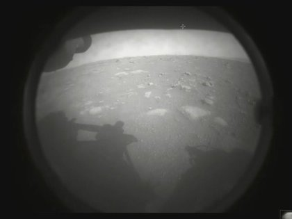

El 18 febrero de 2020 aterrizo el Rover Perseverance en Marte, Después de casi 470 millones de Kilómetros recorridos y 200 días de viaje.
El mayor desafío que tenían que superar era el aterrizaje ya que cualquier error de cálculos ponía en riesgo toda la misión, el robot tenía que sobrevivir a la desgarradora fase final conocida como Entrada, Descenso y Aterrizaje. Los científicos de la NASA la denominan como los “siete minutos de terror”. Se lo apodo con ese término debido a que son los 7 minutos que transcurren entre el momento en que el vehículo entra en la atmósfera a una velocidad de 20 mil km/h y en solo 7 minutos, un sistema totalmente automático, sin intervención desde la Tierra, tiene que hacer que llegue a la superficie de Marte a cero de velocidad. El sistema es totalmente independiente debido a que la distancia es tan grande que hoy en día es imposible trasmitir información en tiempo real por esto mismo se tiene que dejar el trabajo de aterrizaje a las inteligencias artificiales. Cualquier error de cálculos puede costar millones de dólares y años de trabajo.
Este video muestra los llamados "minutos de terror" durante la entrada y aterrizaje del rover Perseverance de la NASA en Marte, el 18 de febrero de 2021.
Específicamente, se encargará de buscar señales de que el Planeta Rojo tuvo las condiciones apropiadas para albergar vida, y de encontrar señales de vida microbiana pasada. Para encontrar estas respuestas, la misión Mars 2020 está equipada con tecnología pionera: desde instrumentos para medir la composición molecular de las rocas marcianas hasta un helicóptero.
Saber más sobre la tecnología a bordo del roverEl aterizaje fue confirmado por mensajes de radio enviados a la Tierra desde el cráter Jezero, un antiguo lago que será estudiando en los próximos años por el robot.
Las dos primeras imágenes enviadas por el Perseverance a la Tierra fueron tomadas por las Hazard Avoidance Cameras (HazCams), seis cámaras instaladas para monitorear el terreno. Esta cámara la uso el robot para controlar el aterrizaje y están protegidas para el turbulento ingreso a la superficie de Marte y su puesta en terreno. Las HazCams detectan peligros en el camino delantero y trasero del robot, como rocas grandes, zanjas o dunas de arena. Los ingenieros también usan las HazCams frontales para ver dónde se puede mover el brazo robótico para hacer mediciones, tomar fotografías y recolectar muestras de roca y suelo